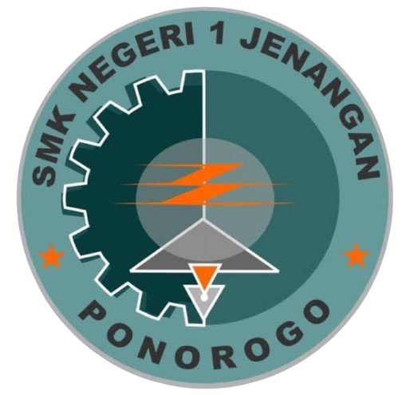

Feature

SMKN 1 JENANGAN merupakan salah satu sekolah jenjang SMK berstatus
Negeri yang berada di wilayah Kec. Jenangan, Kab. Ponorogo, Jawa
Timur. SMKN 1 JENANGAN didirikan pada tanggal 2 Januari 1966 dengan
Nomor SK Pendirian 148/DIR-PT/BI/1966 yang berada dalam naungan
Kementerian Pendidikan dan Kebudayaan. Dalam kegiatan pembelajaran,
sekolah yang memiliki 254 siswa ini dibimbing oleh 132 guru yang
profesional di bidangnya. Kepala Sekolah SMKN 1 JENANGAN saat ini
adalah Sujono. Operator yang bertanggung jawab adalah Muhamad Zulkifli
Aliantomy. SMKN 1 JENANGAN merupakan salah satu sekolah jenjang SMK di
wilayah Kab. Ponorogo yang menawarkan pendidikan berkualitas dengan
terakreditasi A dan sertifikasi ISO 9001:2008. Dengan adanya
keberadaan SMKN 1 JENANGAN, diharapkan dapat memberikan kontribusi
dalam mencerdaskan anak bangsa di wilayah Kec. Jenangan, Kab.
Ponorogo.
Kontak
Anda bisa menghubungi SMKN 1 JENANGAN melalui nomor telepon/fax/email
yang ada di tabel informasi lengkap atau mendatangi langsung SMKN 1
JENANGAN yang terletak di JL. NIKEN GANDINI PONOROGO NO.98, Setono,
Kec. Jenangan, Kab. Ponorogo, Jawa Timur.
Website
Anda bisa mendapatkan update informasi terbaru terkait dengan kegiatan
akademik dan non-akademik yang dilaksanakan oleh SMKN 1 JENANGAN
melalui website resmi SMKN 1 JENANGAN dengan alamat
www.smkn1jenpo.sch.id.
Akreditasi
Sekolah ini telah terakreditasi A dengan Nomor SK Akreditasi
1214/BAN-SM/SK/2018 pada tanggal 31 Desember 2018. Selain itu, SMKN 1
JENANGAN juga telah tersertifikasi ISO 9001:2008.